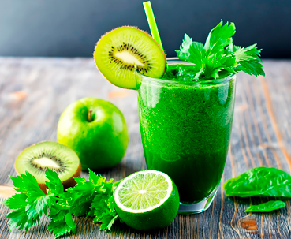
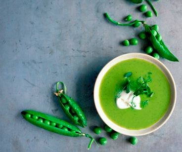
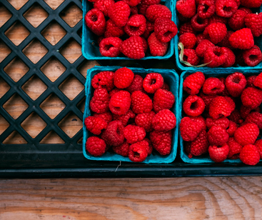

Blog
Dolore magna aliqua. Ut enim ad minim veniam, quis nostrud exercitation ullamco laboris nisi ut aliquip ex ea commodo consequat. Duis aute irure dolor in reprehenderit in voluptate velit.

20
nov
Green Smoothies: Too Much of a Good Thing?
By
Auskteez
2 hours ago

14
nov
Growing Food and a “Thirst” for Innovation
By
Auskteez
3 hours ago

10
nov
Pesticides & Food: What You Need to Know
By
Auskteez
6 hours ago
view more